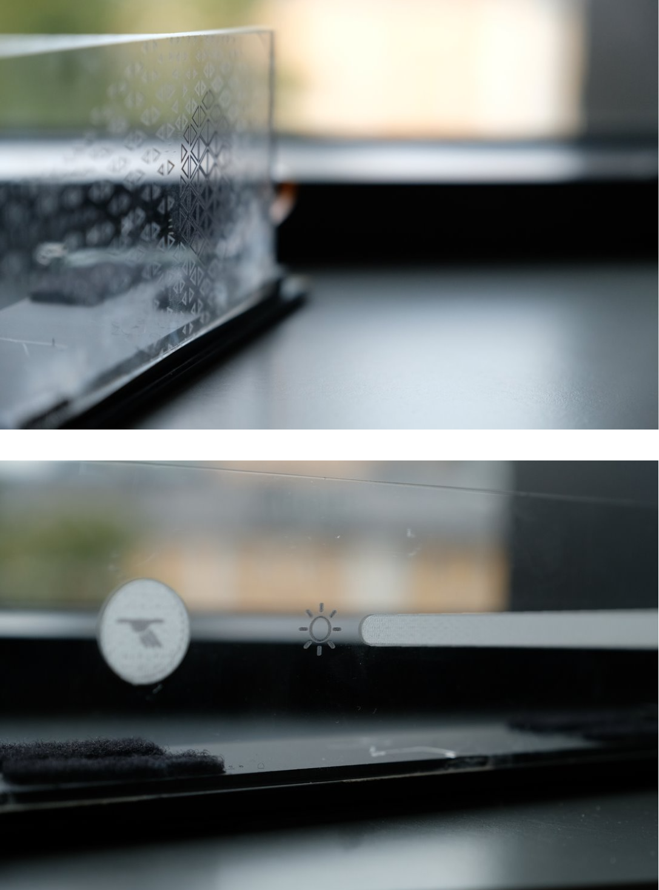
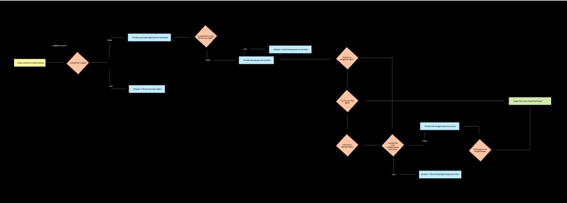
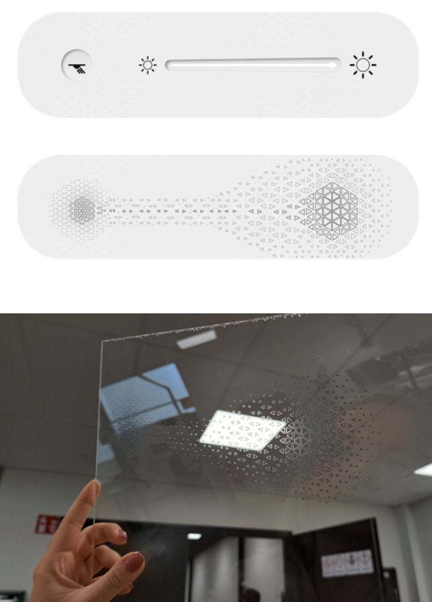
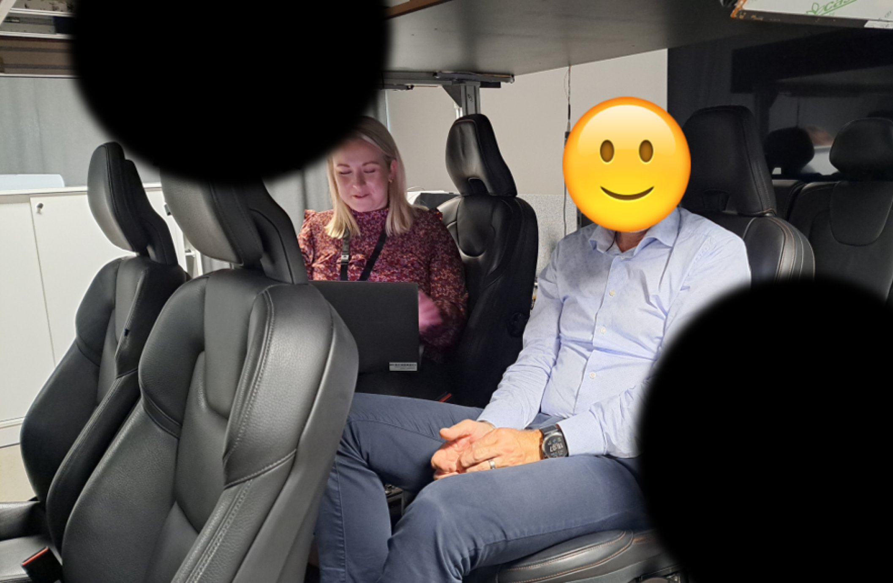
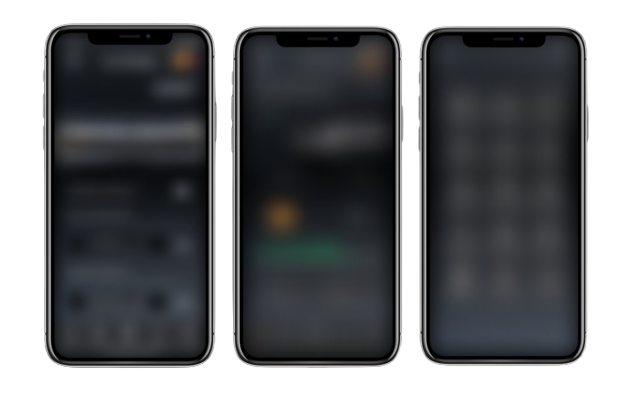

Internship - Lynk & Co Design
What did I do?
In the autumn of 2023, I embarked on an enriching 8-week internship journey at Lynk & Co Design in Gothenburg. Within this period, I chose to be a part of the Digi-Physical team, responsible for optimizing the user-friendliness of the physical components of the vehicles. This experience not only exposed me to the world of physical UX design but also offered a chance to contribute to UI design, with a special focus on a mobile application.
What is Lynk & Co?
Lynk & Co, established in 2016, is a Chinese automotive brand owned by Geely Holding Group, which also own other well-known brands like Volvo, Polestar, and Lotus. Lynk & Co stands out for its commitment to innovative and connected mobility solutions, offering cars designed with a modern, user-friendly aesthetic.
Situated in Lindholmen, Gothenburg, Lynk & Co Design is a dedicated design center affiliated with Lynk & Co. Its primary mission is to shape and define the design language and concepts that characterize Lynk & Co automobiles, ensuring a distinct and user-centric experience for their customers.

Interactive Courtesy Light
During my internship, my primary assignment revolved around the design of an interactive courtesy light for an upcoming car model. The project commenced with getting presenting the initial concept for the light, and I was subsequently given a high degree of creative autonomy to expand upon it.
(Due to the constraints of a signed NDA, I cannot share some of the specific details or visuals of the project.)
User Research
I initiated user research for Lynk & Co's vehicle users, with a focus on their unique market presence. Lynk & Co designs their cars in Gothenburg, Sweden, but primarily targets production and sales in China. To gain valuable insights, I delved into the research resources available from their research center in China. This wealth of information laid a solid foundation for designing the courtesy light, allowing me to develop a deep understanding of the user base and their preferences.
User Flow
Creating a User Flow was a critical step in my project. It helped visualize user journeys, guiding my design work in Figma. This approach ensured a user-centric focus, aligning the design with the company's concept and user experience priorities.

Prototypes
I started designing a prototype of what the light would look like and function, in Figma. Firstly I created a more concrete design with icons to guide the user through the interactions of the light, as the company had such a strong emphasis on innovation and a playful approach, I wanted to create another version that was more abstract to be aligned wih the companys approach. This resulted in two distinct design versions of the courtesy light, one with a concrete design and one with an abstract design.
The concrete version of the light has a power on/off touch button to the left, a touch brightness bar on its right, complemented by associated icons. Elements were positioned to ensure user comfort and provide clear visual cues for the functionalities they represent. To enhance the user experience, the idea was for the button and the brightness bar and the icons to have a tactile depth to them.
The abstract version of the light was designed with a pattern as a visual guide for users to navigate its functions. On the left side of this pattern, a more condensed area indicating both the lowest brightness level and the specific touchpoint to turn the light on/off. The right side of the pattern has a larger, less condensed area, signifying the highest brightness setting. A series of arrow pathways within this pattern functions as a brightness bar, directing users to swipe their fingers across it for brightness adjustment. To enhance the user eexperience, the idea was for the pattern to have a tactile depth to it as well, with more depth in the left side of the pattern and less depth to the right side of the pattern. To further guide the user through the functions.
To ascertain user preferences between the two designs, I needed to conduct usability tests. Therefore I crafted physical prototypes of the lights for test participants to interact with, leveraging guidance from my mentor. I utilized a UV printer to apply patterns to materials and a laser machine to provide depth to the material. My mentor also aided in the implementation of touch interaction.

Usability Tests
For the Usability Tests, I developed a comprehensive template encompassing questions and scenarios and scheduled test participants. With the goal of assessing user perceptions and interactions with the two versions of the courtesy light compared to a standard one, and to compare the two versions.
Several Usability Tests were conducted with participants seated in the backseat of a rig that resembled the interor of the car, equipped with a physical courtesy light. The participants were of different ages with different genders and various job positions in order to have a variation in the users. Participants were presented with different scenarios. The objective was for users to attempt to turn the light on/off and adjust the brightness. They got to engage with both versions of the light, with identical scenarios and questions. Participants were asked to rate the ease of performing the tasks and were asked questions throughout the tests. I sat alongside observing their actions.
After the Usability Tests, I gathered the data and then analyzed the results and categorized the data through thematic analysis in order to finns themes and patterns. This revealed a longer list of findings in both user behaviour, wishes as well as both positive and negative feedback from the participants.

Presentation
And the last thing on my internhip was for me to write a report and to perform a presentation of all my work with the courtesy light to all the department leads, to show a summary of what I have done and also what I recommend doing moving forward in this project.
UI-design on a Mobile App
During my internship, I got to work on another project as well focusing on enhancing a mobile app tailored for an upcoming car model. The project empowered me to steer the course of my contributions, allowing me to reshape the app's layout for a more conventional yet premium appearance. Additionally, I delved into creating wireframes for a new function in the app and implementing thoughtful UI design and strategic spacing between elements.
(Due to the constraints of a signed NDA, I cannot share specific details or visuals of the project.)
Benchmarking
Prior to diving into the further development of the app, I conducted benchmarking on mobile apps from leading car brands such as Hyundai, BMW, and Volvo. This exploration aimed to grasp industry standards and anticipate user expectations for our mobile app.
User Research
My quest for relevant user research led me to a User Clinic, where a abundance of user feedback proved invaluable for this project. This feedback not only inspired new features for the app but also informed strategic changes to the existing UI design.
Prototypes
Equipped with insights from benchmarking and user research, I ventured into the design phase using Figma. Starting with Low-Fidelity wireframes, to quickly map out the structure and layout of the app, I translated these concepts into High-Fidelity Wireframes, bringing the envisioned changes to life.
Presentation
In the final phase, I presented my work to the project lead, providing a visual narrative of the implemented changes and newly added features to the app. This presentation connected these enhancements to the invaluable insights derived from the User Clinic, offering a holistic overview of the project's evolution.

Lessons Learnt
Throughout this internship, I gained valuable insights into the realm of Physical UX and its distinctions from the more conventional digital UX design. I discovered the synergy between my digital UX knowledge and its applicability in the domain of physical UX. Additionally, I expanded my understanding of the physical aspects of user experiences.
My experience in the automotive industry exposed me to the intricate world of UX design within this sector. It underscored the importance of careful considerations when designing interfaces, especially within the context of in-car screens, where safety and the primary task of driving are of utmost importance.
The importance of a holistic design approach became evident as I navigated through projects involving both physical and digital interfaces. Integrating physical components like the interactive courtesy light with digital experiences in the mobile app highlighted the need to consider the user journey as a seamless continuum.